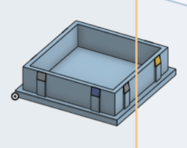
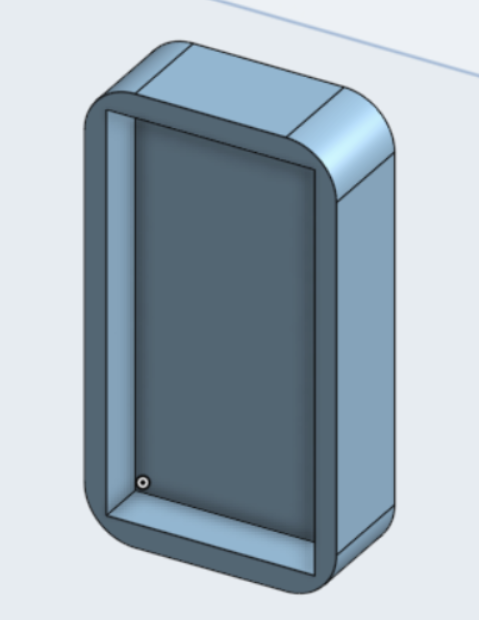
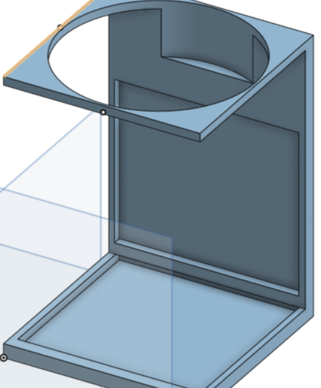
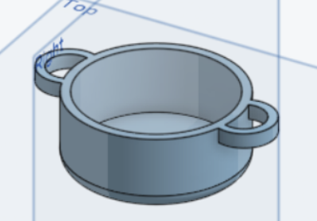

This project was made because my parents had a problem with some of their furniture not having feet which would cause them ti scratch the floor so they asked me to engineer something that way it would no longer scratch the floor so I decided to make feet in measurement to the holes that way the furniture would not scratch the floors.
So first I decided to make measurements using a caliper to figure out how big the hole was width and length. once I did that I put those measurements into onShape the CAD software I was using for this project and essentially made a squre inside another square. The issue I ran into was that there was no tension keeping the square in the hole so it would always just fall out. My solution was to make small inclined edges on each side that way as the feet went into the hole tension would build casuing the feet to get stuck like designed to.
So this project came anout the same way the one above did. Essentially my parents had metal chairs scratching the floor of their kitchen and they needed feet for the chair.
So firsts I took demensions using a caliper, threw those demensions into onShape. Then I decided to take a different approach then I did last time essentially I made the top barely fit the whole which allowed tension to build and hold it together when squeezing them on there.
SThis CAD model was for another project which was essentially a arduino car that I transformed into an arduino car that transported coca cola.
Essentially I took the radius of a coke can and threw those demnesions in onShape and shaped it into a cup holder I then drilled holes into the cupholder and into the car and attached both of them using nuts and bolts.
This is just a CAD pot, it is just an ordinary pot, I also designed a lid for it as well. This was purely for fun.
I had to CAD something for an intro engineering class and it had to have a hole. I always wanted a minature pot so I decided to CAD that which is essentially that a minature pot.
created with
Website Builder Software .